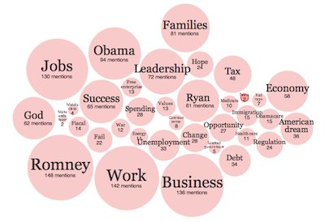

Read a Random Twitter Bot Tweet
the dataset that we plan to use is 538’s database of Russian troll tweets and their posters. The data was gathered by the 538 team in collaboration with Clemson University. The data can be accessed here: https://github.com/fivethirtyeight/russian-troll-tweets The data database is made up of colums such as author, contents, language, data published, followers at time collected, following # at time collected, updates, post type, tweet URL and more
